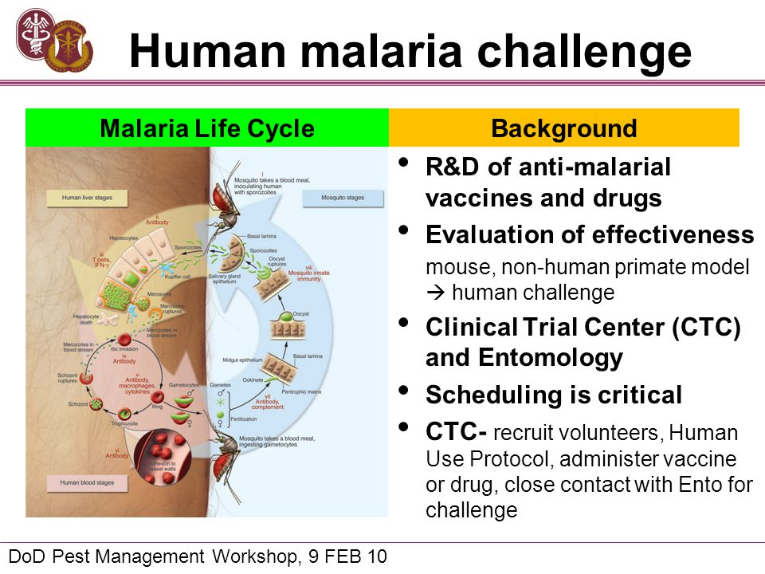

International funding for malaria control has risen steeply in the past decade. Disbursements reached their highest ever levels in 2009 at US$ 1.5 billion, but new commitments for malaria control appear to have stagnated in 2010, at US$ 1.8 billion. Countries with smaller populations at risk continue to receive more funding per person at risk than more populous countries. The amounts committed to malaria, while substantial, still fall short of the resources required for malaria control, estimated at more than US$ 6 billion for the year 2010. The increased financing has resulted in tremendous progress in increasing access to insecticide-treated mosquito nets (ITNs) in the past 3 years. By the end of 2010, approximately 289 million ITNs will have been delivered to sub-Saharan Africa, enough to cover 76% of the 765 million persons at risk of malaria. It is estimated that 42% of households in Africa owned at least one ITN in mid-2010, and that 35% of children slept under a ITN. The percentage of children using ITNs is still below the WHA target of 80% partly because up to the end of 2009, ITN ownership remained low in some of the largest African countries. Low rates of use reported in some surveys are primarily due to a lack of sufficient nets to cover all household members; household survey results suggest that most (80%) of the available ITNs are used. While the rapid scale-up of ITN distribution in Africa represents an enormous public health achievement, it also represents a formidable challenge for the future in ensuring that the high levels of coverage are maintained. The lifespan of a long-lasting ITN is currently estimated to be 3 years. Nets delivered in 2006 and 2007 are therefore already due for replacement, and those delivered between 2008 and 2010 soon will be. Failure to replace these nets could lead to a resurgence of malaria cases and deaths. IRS programmes have also expanded considerably in recent years, with the number of people protected in sub-Saharan Africa increasing from 13 million in 2005 to 75 million in 2009, corresponding to protection for approximately 10% of the population at risk in 2009. Current methods of malaria vector control are highly dependent on a single class of insecticides, the pyrethroids, which are the most commonly used compounds for IRS and the only insecticide class used for ITNs. The widespread use of a single class of insecticides increases the risk that mosquitoes will develop resistance, which could rapidly lead to a major public health problem. The risk is of particular concern in Africa, where insecticidal vector control is being deployed with unprecedented levels of coverage and where the burden of malaria is greatest. WHO now recommends that all cases of suspected malaria be confirmed with a diagnostic test prior to treatment. As the incidence of malaria decreases through much of sub-Saharan Africa, the need to differentiate malaria from non-malarial fevers becomes more pressing. The proportion of reported cases in Africa confirmed with a diagnostic test has risen substantially from less than 5% at the beginning of the decade to approximately 35% in 2009, but low rates persist in the majority of African countries and in a minority of countries in other regions. A small number of countries have shown that it is possible to scale up rapidly the availability of malaria diagnostic testing on a national scale, provided that attention is given to adequate preparation, training, monitoring, supervision and quality control. Such experiences have been linked with large savings in the use of artemisinin-based combination therapies (ACTs) and with improved malaria surveillance. Information from manufacturers indicates that the number of ACTs procured has increased in every year since 2005. By the end of 2009, 11 African countries were providing sufficient courses of ACTs to cover more than 100% of malaria cases seen in the public sector; a further 8 African countries delivered sufficient courses to treat 50%–100% of cases. These figures represent a substantial increase since 2005, when only 5 countries were providing sufficient courses of ACT to cover more than 50% of patients treated in the public sector. However, information on access to treatment is generally incomplete, particularly for the significant proportion of patients treated in the private sector. The use of oral artemisinin-based monotherapies threatens the therapeutic life of ACTs by fostering the spread of resistance to artemisinins. By November 2010, 25 countries were still allowing the marketing of these products and 39 pharmaceutical companies were manufacturing them. Most of the countries that still allow the marketing of monotherapies are located in the African Region and most of the manufacturers are in India. The spread of resistance to antimalarial medicines over the past few decades has led to an intensification of efficacy monitoring to allow early detection of resistance. Despite the observed changes in parasite sensitivity to artemisinins, the clinical and parasitological efficacy of ACTs has not yet been compromised, even in the Greater Mekong sub-region. Nonetheless, both components of the drug combination are currently at risk and using an ACT with an ineffective partner medicine can increase the risk of development or spread of artemisinin resistance. A total of 11 countries and one area in the WHO African Region showed a reduction of more than 50% in either confirmed malaria cases or malaria admissions and deaths in recent years. A decrease of more than 50% in the number of confirmed cases of malaria between 2000 and 2009 was found in 3 of the 56 malaria-endemic countries outside Africa, while downward trends of 25%–50% were seen in 8 other countries. Morocco and Turkmenistan were certified by the Director-General of WHO in 2010 as having eliminated malaria. 1 xii WORLD MALARIA REPORT 2010 In 2009, the European Region reported no locally acquired cases of P. falciparum malaria for the first time. It is estimated that the number of cases of malaria rose from 233 million in 2000 to 244 million in 2005 but decreased to 225 million in 2009. The number of deaths due to malaria is estimated to have decreased from 985 000 in 2000 to 781 000 in 2009. Decreases in malaria burden have been observed in all WHO Regions, with the largest proportional decreases noted in the European Region, followed by the Region of Americas. The largest absolute decreases in deaths were observed in Africa. While progress in reducing the malaria burden has been remarkable, there was evidence of an increase in malaria cases in 3 countries in 2009 (Rwanda, Sao Tome and Principe, and Zambia). The reasons for the resurgences are not known with certainty. The increases in malaria cases highlight the fragility of malaria control and the need to maintain control programmes even if numbers of cases have been reduced substantially. The experiences in Rwanda and Zambia also indicate that monthly monitoring of disease surveillance data, both nationally and subnationally, is essential. Since many countries in sub-Saharan Africa had inadequate data to monitor disease trends, it is apparent that greater efforts need to be made to strengthen routine surveillance systems. Major epidemiological events could be occurring in additional countries without being detected and investigated.